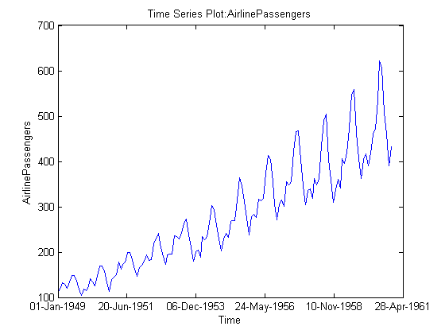
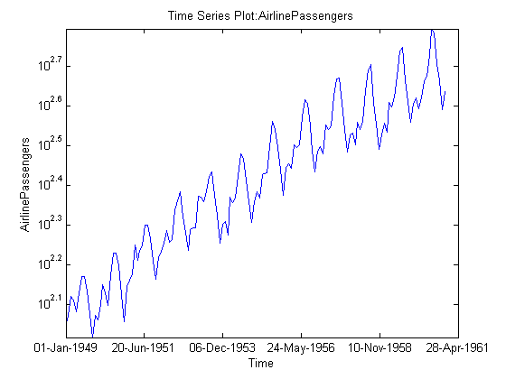
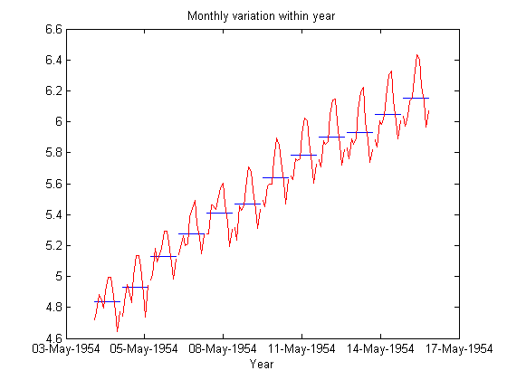
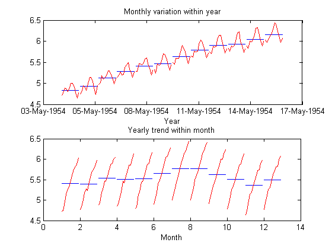
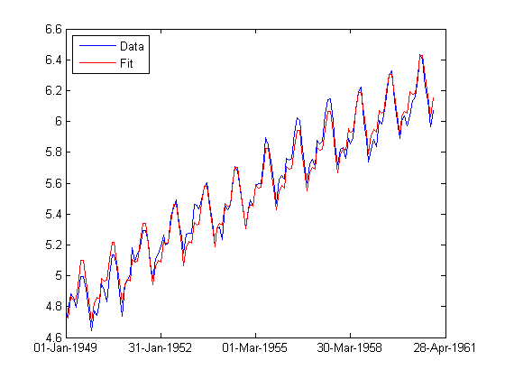
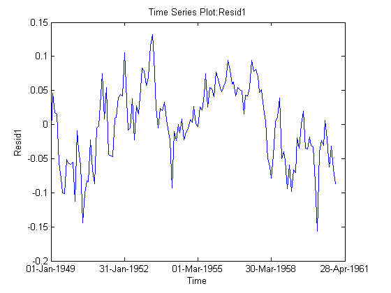
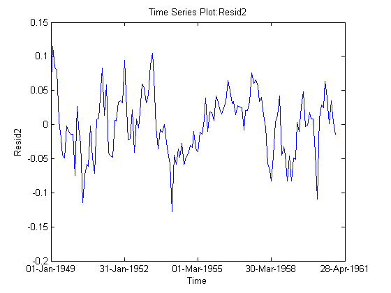
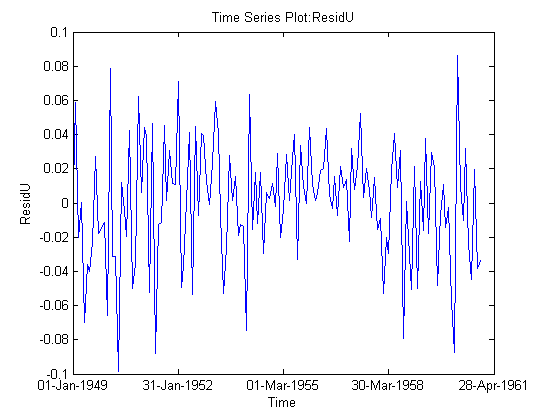

Time Series Regression of Airline Passenger Data
This demo uses some features available in the Statistics Toolbox™ to analyze time series data.
Contents
Air Passenger Data
First we create an array of monthly counts of airline passengers, measured in thousands, for the period January 1949 through December 1960.
% 1949 1950 1951 1952 1953 1954 1955 1956 1957 1958 1959 1960 y = [112 115 145 171 196 204 242 284 315 340 360 417 % Jan 118 126 150 180 196 188 233 277 301 318 342 391 % Feb 132 141 178 193 236 235 267 317 356 362 406 419 % Mar 129 135 163 181 235 227 269 313 348 348 396 461 % Apr 121 125 172 183 229 234 270 318 355 363 420 472 % May 135 149 178 218 243 264 315 374 422 435 472 535 % Jun 148 170 199 230 264 302 364 413 465 491 548 622 % Jul 148 170 199 242 272 293 347 405 467 505 559 606 % Aug 136 158 184 209 237 259 312 355 404 404 463 508 % Sep 119 133 162 191 211 229 274 306 347 359 407 461 % Oct 104 114 146 172 180 203 237 271 305 310 362 390 % Nov 118 140 166 194 201 229 278 306 336 337 405 432 ]; % Dec % Source: % Hyndman, R.J., Time Series Data Library, % http://www-personal.buseco.monash.edu.au/~hyndman/TSDL/. % Copied in October, 2005.
Create Time Series Object
When we create a time series object, we can keep the time information along with the data values. We have monthly data, so we create an array of dates and use it along with the Y data to create the time series object.
yr = repmat((1949:1960),12,1); mo = repmat((1:12)',1,12); time = datestr(datenum(yr(:),mo(:),1)); ts = timeseries(y(:),time,'name','AirlinePassengers'); ts.TimeInfo.Format = 'dd-mmm-yyyy'; tscol = tscollection(ts); plot(ts)
Examine Trend and Seasonality
This series seems to have a strong seasonal component, with a trend that may be linear or quadratic. Furthermore, the magnitude of the seasonal variation increases as the general level increases. Perhaps a log transformation would make the seasonal variation be more constant. First we'll change the axis scale.
set(gca,'YScale','log');
It appears that it would be easier to model the seasonal component on the log scale. We'll create a new time series with a log transformation.
tscol = addts(tscol, log(ts.data), 'logAirlinePassengers');
logts = tscol.logAirlinePassengers;
Now let's plot the yearly averages, with monthly deviations superimposed. We want to see if the month-to-month variation within years appears constant. For these manipulations treating the data as a matrix in a month-by-year format, it's more convenient to operate on the original data matrix.
t = reshape(datenum(time),12,12); logy = log(y); ymean = repmat(mean(logy),12,1); ydiff = logy - ymean; x = yr + (mo-1)/12; plot(x,ymean,'b-',x,ymean+ydiff,'r-') title('Monthly variation within year') xlabel('Year')
Now let's reverse the years and months, and try to see if the year-to-year trend is constant for each month.
set(gca,'Position',[0.13 0.58 0.78 0.34]); subplot(2,1,2); t = reshape(datenum(time),12,12); mmean = repmat(mean(logy,2),1,12); mdiff = logy - mmean; x = mo + (yr-min(yr(:)))/12; plot(x',mmean','b-',x',(mmean+mdiff)','r-') title('Yearly trend within month') xlabel('Month')
Model Trend and Seasonality
Let's attempt to model this series as a linear trend plus a seasonal component.
subplot(1,1,1); X = [dummyvar(mo(:)), logts.time]; [b,bint,resid] = regress(logts.data, X); tscol = addts(tscol,X*b,'Fit1') plot(logts); hold on; plot(tscol.Fit1,'Color','r'); hold off legend('Data','Fit','location','NW')
Time Series Collection Object: unnamed
Time vector characteristics
Start date 01-Jan-1949
End date 01-Dec-1960
Member Time Series Objects:
AirlinePassengers
logAirlinePassengers
Fit1
 Based on this graph, the fit appears to be good. The differences between the actual data and the fitted values may well be small enough for our purposes.
But let's try to investigate this some more. We would like the residuals to look independent. If there is autocorrelation (correlation between adjacent residuals), then there may be an opportunity to model that and make our fit better. Let's create a time series from the residuals and plot it.
tscol = addts(tscol,resid,'Resid1');
plot(tscol.Resid1)
 The residuals do not look independent. In fact, the correlation between adjacent residuals looks quite strong. We can test this formally using a Durbin-Watson test.
[p,dw] = dwtest(tscol.Resid1.data, X)
p =
2.0007e-030
dw =
0.4256
A low p-value for the Durbin-Watson statistic is an indication that the residuals are correlated across time. A typical cutoff for hypothesis tests is to decide that p<0.05 is significant. Here the very small p-value gives strong evidence that the residuals are correlated.
We can attempt to change the model to remove the autocorrelation. The general shape of the curve is high in the middle and low at the ends. This suggests that we should allow for a quadratic trend term. However, it also appears that autocorrelation will remain after we add this term. Let's try it.
X = [dummyvar(mo(:)), logts.time, logts.time.^2];
[b2,bint,resid2] = regress(logts.data, X);
tscol = addts(tscol,resid2,'Resid2');
plot(tscol.Resid2);
[p,dw] = dwtest(tscol.Resid2.data, X)
p =
3.3395e-020
dw =
0.6487
 Adding the squared term did remove the pronounced curvature in the original residual plot, but both the plot and the new Durbin-Watson test show that there is still significant correlation in the residuals.
Autocorrelation like this could be the result of other causes that are not captured in our X variable. Perhaps we could collect other data that would help us improve our model and reduce the correlation. In the absence of other data, we might simply add another parameter to the model to represent the autocorrelation. Let's do that, removing the squared term, and using an autoregressive model for the error.
In an autoregressive process, we have two stages:
Y(t) = X(t,:)*b + r(t) % regression model for original data r(t) = rho * r(t-1) + u(t) % autoregressive model for residuals
Unlike in the usual regression model when we would like the residual series r(t) to be a set of independent values, this model allows the residuals to follow an autoregressive model with its own error term u(t) that consists of independent values.
To create this model, we want to write an anonymous function f to compute fitted values Yfit, so that Y-Yfit gives the u values:
Yfit(t) = rho*Y(t-1) + (X(t,:) - rho*X(t-1,:))*b
In this anonymous function we combine [rho; b] into a single parameter vector c. The resulting residuals look much closer to an uncorrelated series.
r = corr(resid(1:end-1),resid(2:end)); % initial guess for rho X = [dummyvar(mo(:)), logts.time]; Y = logts.data; f = @(c,x) [Y(1); c(1)*Y(1:end-1) + (x(2:end,:)- c(1)*x(1:end-1,:))*c(2:end)]; c = nlinfit(X,Y,f,[r;b]); u = Y - f(c,X); tscol = addts(tscol,u,'ResidU'); plot(tscol.ResidU);
Summary
This demo provides an illustration of how to use the MATLAB® timeseries object along with features from the Statistics Toolbox. It is simple to use the ts.data notation to extract the data and supply it as input to any Statistics Toolbox function. A few functions (xbarplot, schart, and ewmaplot) accept time series objects directly.
More elaborate analyses are possible by using features specifically designed for time series, such as those in Econometrics Toolbox™ and System Identification Toolbox™.